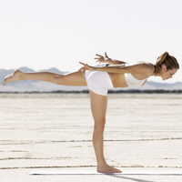

Leg Exercises

Stand with the feet together, and lift up the left leg with a pointed toe, putting your body weight onto the standing, right leg.
Continue to lift your leg and drop the head and torso so they form a straight horizontal line from head to toe with the arms at your sides.
Engage your core and make sure the left thigh, hip, and toes are aligned.
Remain facing down and keep your back as straight as possible.
Ensure your right knee doesn't lock and center the weight on the middle of the foot.
Hold for 5 breaths and then slowly return to standing.
Switch legs and repeat.